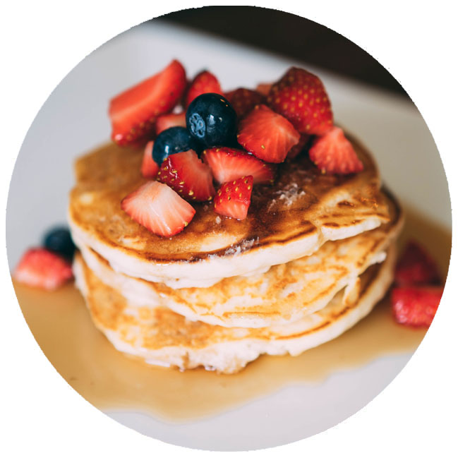
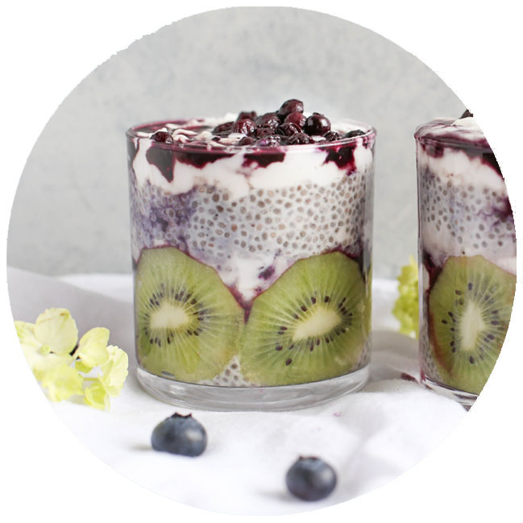

Guía/gastronómica
Un polo gastronómico
en el corazón del barrio.
En Nuñez está tu lugar
Conocé lo nuevo >

restó / pizza
baldini

bares
luz mala

coffee & bake
rita

restó / healthy
organic market

restó / parrilla
la parraca
Recomendaciones
de los Chefs >

"Pancake de banana con baño de frutillas, arándanos y jarabe de arce"
Cheff Jorge Bianchi
Schuster

"Cheesecake de avellanas y maracuyá con baño de frutos rojos"
Cheff Lía Saenz
Jornal

"Smoothie de yoghurt griego, uvas, kiwi y arándanos"
Cheff Ana García
Gorrión

"Cupcakes de chocolate amargo con corazón de nutella y avellanas"